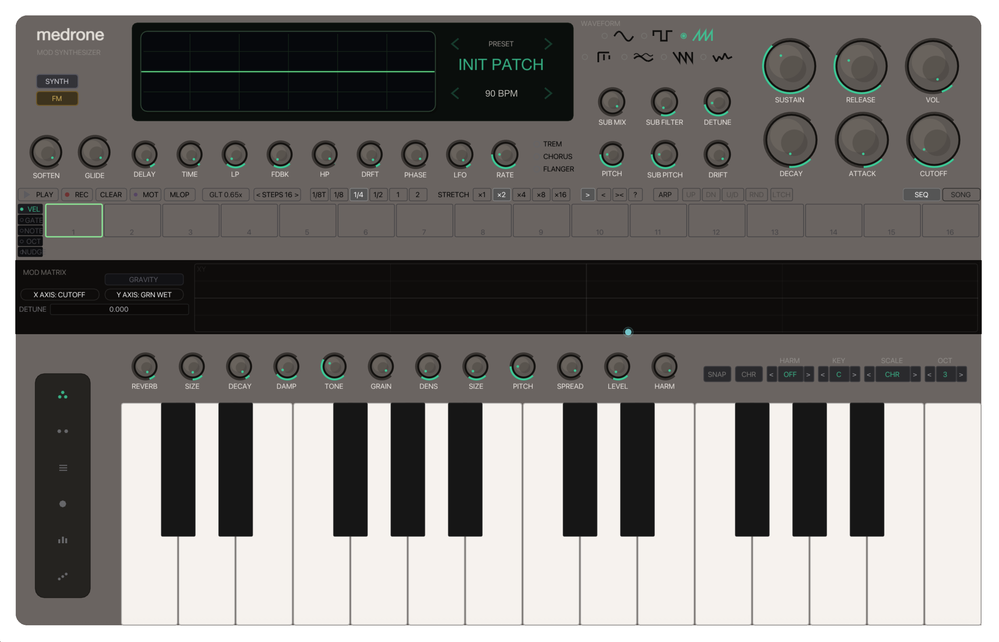
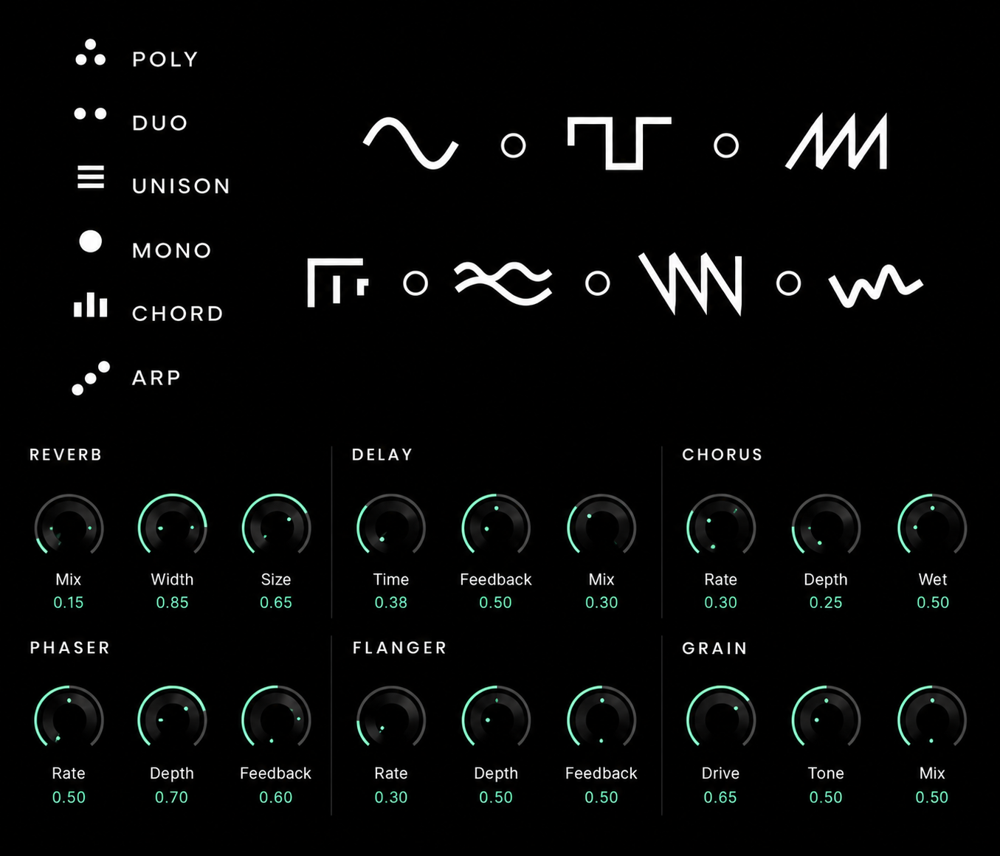
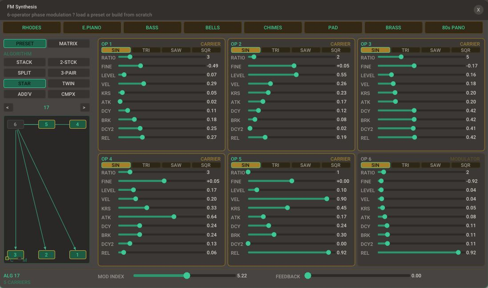
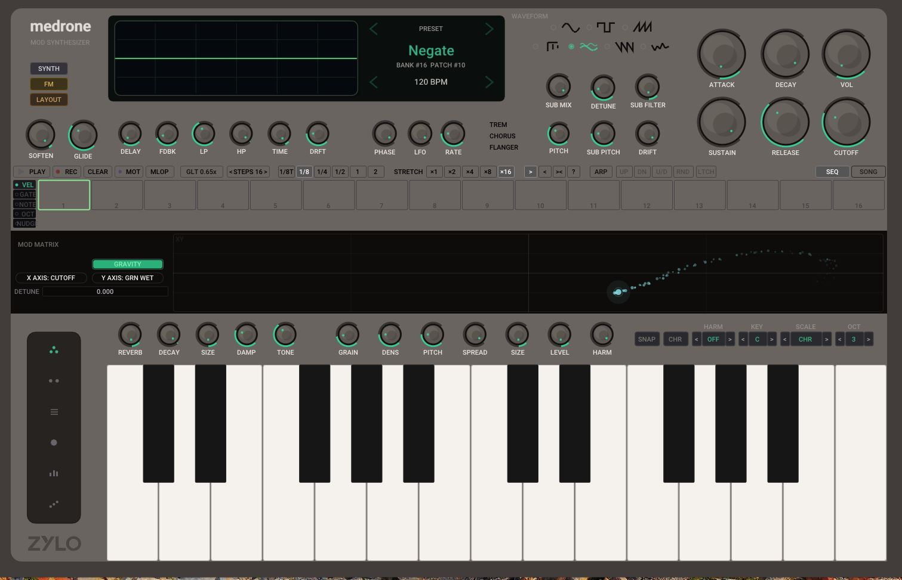
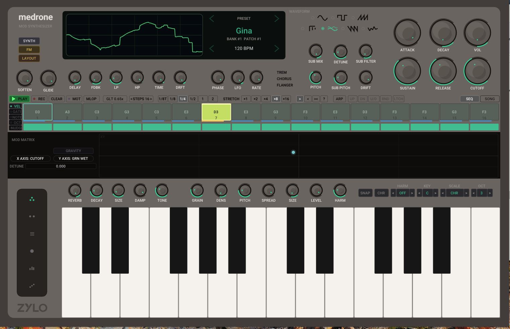

Classic control, modern movement.
Shape attack, decay, sustain, release, cutoff, detune, pitch, sub mix, drift, waveform selection, and performance tone controls from one immediate panel.
Mod Synthesizer
FM, synth design, physics-driven modulation, sequencing, and 160+ presets in one performance instrument.
$129
About
Medrone is a hands-on modulation synthesizer built for producers who want sound design to feel physical. Build from a deep synth engine, dial in six-operator FM, throw modulation through the XY pad, then sequence and chain ideas into full evolving patterns.
Available as standalone app, VST3, AU · Windows & Mac · 64-bit only

Core Instrument
Shape attack, decay, sustain, release, cutoff, detune, pitch, sub mix, drift, waveform selection, and performance tone controls from one immediate panel.
Stack, split, star, twin, complex, and paired algorithms make it fast to move from bell tones and keys to metallic pads, basses, and unstable harmonic textures.
Reverb, delay, grain, chorus, flanger, phaser, tremolo, LFO, feedback, drive, damping, size, density, spread, and wet controls live inside the instrument.
Start from curated banks, jump between patches from the main display, or build from scratch when the track needs something nobody else has touched.
Synth Engine
The synth page groups tone, grain, reverb, delay, modulation, chorus, flanger, and phaser controls so the whole sound can be sculpted quickly. It is deep enough for detailed patch design, but laid out like an instrument you can actually perform.


FM Synthesis
Six operators give Medrone a second sound design personality. Choose an algorithm, set ratios and levels, adjust envelopes, and blend modulation index and feedback from a clear single-screen layout.
Interactive XY Mod Matrix
The XY pad is not a static macro control. Grab the point, fling it, turn on gravity, and let inertia generate expressive automation. Keep it bouncing forever or let decay pull the motion down until the sound settles.

Sequencer, Arp, Song Mode
The built-in step sequencer and arp make Medrone more than a preset player. Program notes, gates, octave movement, nudges, motion, and rhythmic values, then use song mode to chain sequences together into longer evolving ideas.

Feature List
Deep synth engine with multiple voices, waveform choices, filter shaping, envelopes, drift, pitch, sub, and performance controls
Six-operator FM engine with carrier/modulator roles, multiple algorithms, ratios, envelopes, feedback, and modulation index
Interactive XY modulation pad with throw gesture, gravity, inertia, optional decay, and assignable destinations
Robust effects suite including reverb, delay, grain, chorus, flanger, phaser, tremolo, LFO, saturation, spread, and damping controls
Preset manager with over 160 included presets for keys, bass, pads, bells, chimes, brass, motion patches, and experimental textures
Step sequencer, arpeggiator, and song mode for chaining sequences into longer rhythmic performances
Audio Samples
Gravity Pad
Slow XY drift, grain wash, wide reverb tail.
FM Glass
Bell-like operator motion with chorus shimmer.
Sequence Pulse
Arp-style pattern with delay feedback and filter movement.
System Requirements